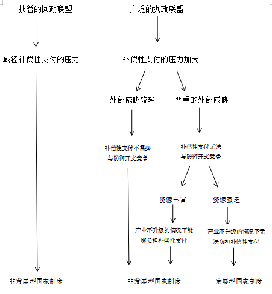
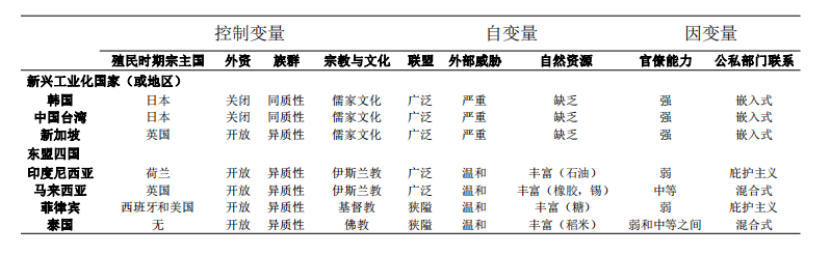
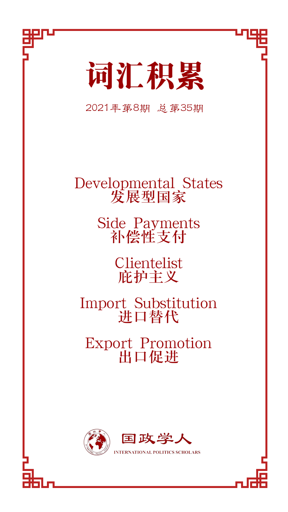

收录于合集

作品简介
【作者】 Richard F. Doner，埃默里大学 Goodrich C. White 名誉教授，其主要研究兴趣为比较政治经济学；Bryan K. Ritchie，圣母大学副校长兼副教务长，前密歇根州立大学政治经济学教授，埃默里大学博士；Dan Slater，密歇根大学政治学教授，埃默里大学博士。
【编译】 刘瑛琛（国政学人编译员，上海国际问题研究院硕士研究生）
【校对】 张曼娜
【审核】 李源
【排版】 余姣
【美编】 方引弓
【来源】 Doner, R. F., Ritchie, B. K., & Slater, D. (2005). Systemic vulnerability and the origins of developmental states: Northeast and Southeast Asia in comparative perspective. International organization , 59(2), 327-361.
【归档】 《国际关系前沿》2021年第8期，总第35期
期刊简介
《国际组织》杂志（ International organization ）创刊于1947年，是由剑桥大学出版社代表国际组织基金会出版的同行评议季刊。其内容涵盖外交政策、国际关系、国际与比较政治经济学、安全政策、环境争端与解决、欧洲一体化、联盟模式与战争、谈判与冲突解决、经济发展与调整、国际资本流动等多个国际事务领域。根据Journal Citation Reports显示，2019年其影响因子为5，在95种国际关系期刊中排名第2。
系统脆弱性与发展型国家的起源：
比较视角下的东北亚和东南亚
Systemic Vulnerability and the Origins of Developmental States: Northeast and Southeast Asia in Comparative Perspective
Richard F. Doner
Bryan K. Ritchie
Dan Slater
文章导读
发展学学者对于经济制度的作用已经了解很多，但对于这些制度安排的起源却所知甚少。本文为“发展型国家”这一特定类型制度安排的起源提供了一种政治学解释。所谓“发展型国家”，是指一种组织复合体（organizational complexes），专家和官僚机构在这种组织复合体中同有组织的私营部门合作以促进国家经济转型。传统的观点认为，韩国、中国台湾和新加坡的“发展型国家”制度产生于“国家自主性（state autonomy）”，特别是来自群众的压力。但作者认为，这些国家（或地区）非同寻常的能力实际上产生于（1）极端的地缘政治不安全性和（2）严重的资源匮乏条件下，（3）统治精英向不满的公众进行补偿性支付（side payments）的挑战。作者将这些条件的互动称为“系统脆弱性”。而印度尼西亚、马来西亚、菲律宾和泰国的统治精英们从未面临这样一种“系统脆弱性”的互动条件，因此他们能够以较少的建设国家的努力来掌控政治联盟并保有权力。
01
引言
尽管人们对制度的经济影响理解不断加深，但对这些制度的政治起源却关注较少。本文作者为“发展型国家”这一特定类型制度安排的起源提供了一种政治学解释，旨在缩小这两者之间的差距。作者将发展型国家定义为一种组织复合体，专家和官僚机构在这种组织复合体中同有组织的私营部门合作以促进国家经济转型。
传统的观点认为，韩国、中国台湾和新加坡的发展型国家制度产生于“国家自主性”特别是来自群众的压力。但作者认为，发展型国家制度不能被解释为任何良性动机或所谓“国家自主性”的产物。这是因为，政治激励通常不会产生国家经济转型的共同目标，也不会创造出监管部门和激励结构使得政治领导人能够控制官僚来实现经济转型的目标。
作者主张，发展型国家制度的政治起源应该基于“系统脆弱性”的条件。“系统脆弱性”指（1）广泛的联盟承诺，（2）资源禀赋匮乏和（3）严重的安全威胁这三个独立的条件同时存在并相互作用。作者认为，“系统脆弱性”是发展型国家制度产生的充分必要条件，其因果逻辑如图1所示。其后作者使用比较历史分析的方法，采用东南亚和东北亚七个国家的案例，检验评估了其观点。

图1 本文因果逻辑
本文将发展型国家制度起源的研究从传统的东北亚新兴工业国家（或地区）扩展了出去。然而，本文的研究设计还不允许作者将其理论拓展至更广阔的地区。因此，本文观点在东北亚和东南亚地区外的普遍性有待进一步的检验。
02
发展型国家的制度特征
制度特征是本文研究中的一个因变量。何种特征赋予了特定制度解决困扰经济发展的信息、承诺和合作等问题的能力？作者认为，解释发展型国家制度的起源需要将这些特征同与之相伴的经济表现区分开来。在本部分，作者识别了新型工业化国家（或地区）的这些特征，并将其与东盟四国（ASEAN-4，包括印度尼西亚、马来西亚、菲律宾和泰国）的“中间国家（mediate
states）”制度进行了对比。
发展型国家制度是特定类型的 官僚机构 和 公共—私营部门联系
两者的复合体。这里提到的官僚机构在性质上是韦伯式的：通过竞争性的考试进行录用；选贤任能的晋升机制；长期任职；由统辖机构进行领导等。但是发展型国家制度下的官僚又通过与私营部门的联系而超出了韦伯的理想模式。不过，至少三种特征将发展型国家制度同大多数政治体系中广泛存在的“庇护主义（clientelist）”式政商关系区分开来：（1）发展型国家制度下的官僚机构按照功能性的或是行业范围内的标准运作；（2）其私营部门参与者通常会被“纳入”到官僚机构中；（3）其运作往往是透明的（至少是对政府和商业界来说如此）并有明确一致的规则和规范为依据。
最后，作者参考了广泛的学术研究，总结了案例国家在制度特征上的差异。作者认为，韩国、中国台湾和新加坡等新兴工业化国家（或地区）尽管在制度设计上有些许差异，但它们都通过竞争录用官僚并在晋升上以才能为导向，都有强有力的领导发展的机构，都展现出了较低的腐败水平，且有组织的私营部门行为体都被高度“嵌入”到公共部门之中。相比之下，东盟四国的官僚能力充其量是不平衡的，且这几个国家的公共—私营部门联系都展示出了显著的庇护主义。
03
本文观点
什么能够解释亚洲内部在制度特征上的显著差异？作者根据广泛的学术研究，总结出了以下变量。
（一）控制变量
学者们总结了许多可能的因素来解释新型工业化国家（或地区）的制度能力，正是这种制度能力导致了它们的经济成就。首先是 “初始环境”的重要性
，即认为日本的殖民主义虽然残酷，但在后殖民地时代却可促成某个国家经济的快速增长。其次是 对外部投资的依赖性
，部分学者认为东盟四国严重依赖外资，相比之下，韩国和中国台湾确实内部投资占主导地位。第三是 族群同质性
，一些学者认为族群同质性能够促进社会凝聚力，而社会凝聚力则是发展型国家制度的基础。最后则是 宗教与文化
。韩国、中国台湾和新加坡等国家和地区儒家文化占据了主导地位，因此有学者认为宗教和文化可能是有利于加强官僚机构力量的因素。
作者对以上观点进行了反驳。首先，作者认为“同意的逻辑”使前三个变量无法成为制度能力的必要条件。因为新加坡作为一个发展型国家，其殖民时期的宗主国是英国，它严重依赖外资并且有着多种族群。其次，作者认为儒家文化是反感商业的，而这可能会破坏公共—私营部门联系。
（二）自变量
学者们在更广泛的国家建构文献中识别出三个变量，并且这三个变量在东北亚国家（或地区）的背景下被证明更加有效。但当单独考虑的时候，这三个变量的效度都是有限的，因此作者将这三个独立的变量同时存在并相互作用总结为“系统脆弱性”。
（1）广泛的联盟
尽管政客们偏好“最小获胜联盟”，但特定条件会导致他们扩大联盟。在国家形成的早期阶段，每当政治精英认为精英之间的冲突或是社会冲突迫在眉睫时，联盟就会扩大。维持一个广泛的联盟并不是没有成本的，这通常要求精英们提供补偿性支付，即对联盟伙伴很有价值的商品或服务。作者认为，关键点是这些补偿性支付会产生重要的制度性影响。
有学者认为，向大众部门提供的补偿性支付不可避免地会提高成本，并会以特殊的需求淹没制度。但作者研究发现，特定类型的补偿性支付实际上会降低而不是提高成本。关键的问题是，为什么有的统治精英以成本颇高的补偿性支付维系着广泛的联盟，而有的则通过补偿性支付提高了成本竞争力并推动了制度能力发展？
（2）外部威胁
许多文献广泛认同，强有力的国家产生于为应对安全威胁的需要。但是中东和拉美地区国家形成的研究却表明，外部威胁不一定会伴随着制度能力的发展，哪怕是外部威胁与大众联盟的压力结合在一起。作者认为，解释这种差别的关键因素是，受到威胁的国家是否要满足战争所带来的财政挑战。
（3）资源限制
研究表明，一个国家获得财政收入的难易程度会影响其制度发展。但这种观点无法解释那些资源禀赋相似的国家的制度差异。作者认为，一个国家的资源禀赋能否满足其财政收入，基本取决于这个国家所面临的联盟状况和地缘政治环境。
作者将本文变量总结为表1。
表1 本文变量

04
案例：韩国和中国台湾
在韩国和中国台湾，领导人在三个阶段分别创立了制度以应对系统脆弱性所带来的政治和经济挑战。
20世纪50年代早期和中期，韩国和中国台湾都面临着地缘政治安全问题和政权的不稳定，同时又缺乏财政资源。因此，系统脆弱性为其统治精英提供了必要的政治动力，使其提供既具有广泛的影响力又成本低廉的补偿性支付。在这种情况下，韩国和中国台湾都采取了土地改革、农村发展、教育扩张和进口替代政策。这对制度能力产生了影响。韩国产生了公共—私营部门间的社团主义网络和给予农民补贴的半国营组织，中国台湾也是如此。
20世纪50年代晚期和60年代早期，韩国和中国台湾的进口替代战略都难以持续，因此它们转向了完全成熟的出口促进战略。这种政策上的转变需要相应的制度能力，因此在中国台湾和韩国，技术官僚领导下的官僚集权以及政商合作的制度化都得到了发展。
20世纪60年代晚期和20世纪70年代早期，韩国和中国台湾的外部环境都更具威胁，其劳动密集型产业也面临着竞争。在这种情况下，韩国和中国台湾有两个选择可以提高它们在国际上的竞争力：削减工人工资或者提高企业的生产力。削减工人工资会引起政治轰动，因此它们都采取了通过提高出口产品的附加价值来提高生产力的方式。实施这样一种战略需要提高工人工资水平和教育改革。成功落实这一系列旨在提高人力资本的广泛改革需要建立具有以下能力的制度：（1）加强向私营部门行为体咨询；（2）协调多种利益；（3）监督公司和研究机构的表现；（4）维护私营部门充分的自主性以实现互惠。结果是，中国台湾和韩国都加快了官僚机构改革。
中国台湾和韩国的实践证实了作者的观点，即发展型国家制度产生于在严峻的财政和地缘政治环境下通过提供补偿性支付以缓解群众压力的挑战。而在东南亚地区，仅新加坡面临了这种系统脆弱性的条件。
05
案例：东南亚国家
（一）新加坡
新加坡有团结一致且具有能力的官僚机构，官僚机构向商业和劳工广泛咨询，因此新加坡有着发展型国家基本的制度特征。这产生于统治精英应对高度动员的劳工运动、不稳定的地区安全环境和财政资源匮乏的努力。新加坡的统治精英们通过“财富分配机制”不断地提高国家竞争力，并应对了这些威胁。这种以更有效的经济提高生活标准的努力也建立了强有力的制度。
（二）泰国
现代泰国国家形成于19世纪下半叶。限制较为严重的时期推动了泰国制度能力的爆发，但是这些限制从未太过严重或是比较持续。泰国的统治精英们断断续续地面临着维持广泛同盟的压力、外部威胁和资源限制，但从未同时面临这三个限制性条件。因此，泰国的统治精英们也没有像新加坡一样建立起促进产业升级的官僚能力和公共—私营部门联系。
（三）印度尼西亚、马来西亚和菲律宾
像泰国一样，印度尼西亚、马来西亚和菲律宾三国也从未面临系统脆弱性。这三个国家都没有面临严重的外部威胁，资源条件也过得去。因此，这三个国家的统治精英都没有被迫建立发展型国家制度。这些案例提供的重要的实证依据，表明新加坡和泰国的模式并不局限于这两个案例。
06
结论
作为一种实证分析的尝试，本文旨在揭示东北亚和东南亚国家（或地区）发展型国家制度的政治起源。作者认为，新兴工业国家（或地区）的统治精英们建立了具有一致性的官僚机构和公共—私营部门咨询机制以应对一系列相似的政治经济束缚。这些新兴工业国家（或地区）都必须建立和维持一个广泛的执政联盟，并且需要在不易获得财政收入的情况下解决安全威胁。相反，东盟四国的统治精英则从未面临这样一种混合的威胁。因此，“中立国家”制度就给这些国家的统治集团提供了充分的制度能力来维持执政联盟和维护国家主权。
本文的实证研究还帮助识别出一个系统脆弱性产生发展型国家制度的因果机制。这与普遍的观点相反，发展型国家制度并不是由完全不受约束且吝啬的统治精英建立的。作者发现，这些统治精英向公共部门提供的补偿性支付“激发”了发展型国家令人印象深刻的制度能力，并且这是一个不断强化的过程。如果没有建立这种新的制度，那些旨在保障公众认可的政策如土地改革、先进技术培训等就不会得到有效落实，因为在严重的财政束缚下维持广泛的执政联盟需要较强的制度能力。
除此之外，作者解释了这些亚洲的异常案例，这使得我们可以解决更宽泛的问题，比如在何种条件下政治自利会促使统治精英们提供促进增长的公共物品和改善治理。作者还指出，对统治精英行动的限制不应只局限于民主政体。
作者在产生假设的东北亚国家（或地区）之外检验了其观点的普遍性。因为东南亚国家在关键自变量和制度能力这一因变量上展现出了显著的差异，所以这一地区为检验作者的假设提供了重要的场所。作者也相信，其观点与亚洲地区之外的研究是一致的。
译者评述
本文是一篇经典的比较政治经济学论文。在文中，作者先参考大量学术研究，将发展型国家的起源总结为广泛联盟的压力、资源匮乏和地缘政治不安全三个因素的同时存在与相互作用，即所谓的“系统脆弱性”。随后作者采用比较历史分析方法，通过东北亚和东南亚地区七个案例，验证了前文所提出的理论假设。
作者在本文的研究中很好地应用了比较历史分析方法，同时也显示出该方法的优点与不足。比较历史分析，顾名思义，其核心元素为历史和比较。译者根据不同学者对比较历史分析的定义及对其特点的总结，认为比较历史分析是“一种通过对历史案例，特别是案例时间与过程维度的深入分析与比较，从宏观的视角揭示制度变迁的动因、过程与结果的研究方法。”[1]比较历史分析的优点在于其对宏观议题的关注以及梳理与验证复杂因果机制的能力，本文的研究也能够说明这两点。但是，通过比较历史分析方法抽象出的理论难以被推广到其他案例当中。正如作者所承认的，本文的理论暂时还无法拓展至更广阔的地区，本文观点在东北亚和东南亚地区外的普遍性还有待进一步的检验。
最后，比较历史分析十分重视时间维度。比较历史学者特别关注历史因素在长时段内的变迁以及历史事件的发生次序。而本文很好地做到了这一点，作者在各个案例进行横向比较的同时，又梳理了每个案例内部的纵向历史发展。这种分析避免了“冻结时间”的错误出现。
参考文献
[1] 费海汀.政治科学中的历史方法：以比较历史分析为例[J].北大政治学评论,2019(02):226.
词汇整理

文章观点不代表本平台观点，本平台评译分享的文章均出于专业学习之用, 不以任何盈利为目的，内容主要呈现对原文的介绍，原文内容请通过各高校购买的数据库自行下载。
好好学习，天天“在看”
国政学人
支持学术公益与知识传播
微信扫一扫赞赏作者 __赞赏
已喜欢，对作者说句悄悄话
取消 __
发送给作者
发送
最多40字，当前共字
上一页 1/3 下一页
长按二维码向我转账
支持学术公益与知识传播
受苹果公司新规定影响，微信 iOS 版的赞赏功能被关闭，可通过二维码转账支持公众号。